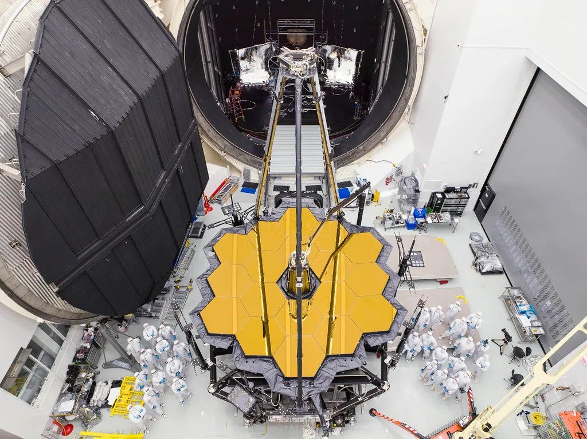

James Webb Space Telescope
Helping Hands of JWST
The space-based component of the James Webb Space Telescope system, known as the Observatory, is made up of the Optical Telescope Element (OTE), the Integrated Science Instrument Module (ISIM), the sunshield, and the spacecraft bus.



The OTE is the heart of the JWST and is responsible for gathering and focusing light from astronomical objects. It consists of a large primary mirror segmented into 18 hexagonal mirrors, which together form a 6.5-meter diameter mirror, allowing for high-resolution observations.
The Integrated Science Instrument Module (ISIM) is a crucial component of the James Webb Space Telescope (JWST), housing its four main scientific instruments—Near Infrared Camera (NIRCam), Near Infrared Spectrograph (NIRSpec), Mid-Infrared Instrument (MIRI), and Fine Guidance Sensor/Near
InfraRed Imager and Slitless Spectrograph (FGS/NIRISS)—while providing thermal control and vibration isolation
to ensure effective operation in space for exploring the universe.
The sunshield protects the telescope from solar radiation and keeps it cool by blocking heat and light from the Sun, Earth, and Moon. This allows the instruments to operate at very low temperatures, which is essential for infrared observations.